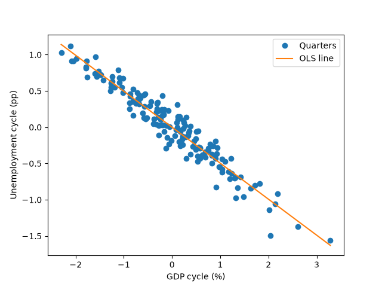
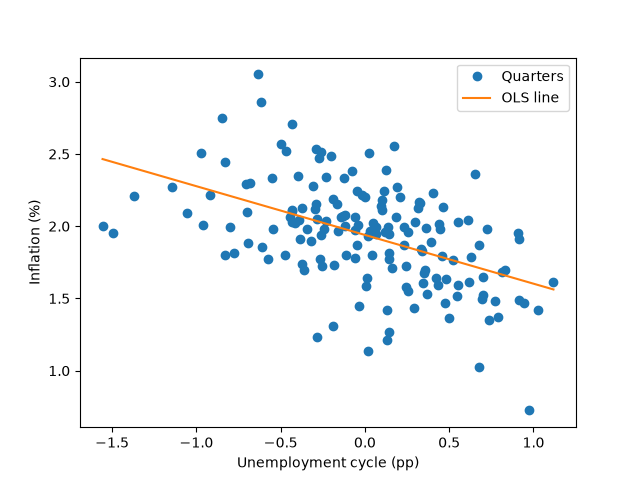
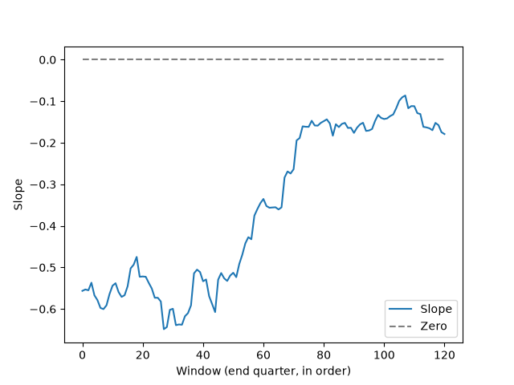

第 10 章: オークンの法則とフィリップス曲線¶
10.1 この章の地図¶
前の章で取り出した循環を使って、2 つの有名な関係を調べます。オークンの法則（GDP が好調なとき、失業率が下がる）と、フィリップス曲線（失業率が低いとき、物価上昇率が高い）です。第 3 章の回帰を、そのまま使います。そして、フィリップス曲線が、時期によって、平らになる様子を、窓をずらした回帰で見ます。
| 項目 | 内容 |
|---|---|
| 経済学の題材 | オークンの法則、フィリップス曲線、フラット化するフィリップス曲線 |
| 使う Python の機能 | 第 3 章の fit_ols、PeriodIndex.year、論理値で行を選ぶ、窓をずらす for ループ |
| 新しく導入するライブラリ | なし |
| 完成形 | okun_regression、okun_regression_from_data、phillips_regression、phillips_regression_from_data、phillips_by_period、rolling_slope |
| ファイル | 実装: lib/chapter10/okun_phillips.py、lib/chapter10/plot.py（傾きの推移の図）／テスト: test/chapter10/test_okun_phillips.py、test/chapter10/test_plot.py（自分で書くときは、practice/chapter10/ に、同じ名前で作ります） |
| データ | 第 9 章の data/quarterly.csv（架空の国の四半期データ） |
経済学の式とコードの対応¶
| 経済学 | 式 | コード |
|---|---|---|
| オークンの法則 | 失業率の循環 = c + β·GDP の循環（β < 0） | okun_regression(unemployment_cycle, output_cycle) |
| フィリップス曲線 | 物価上昇率 = c + β·失業率の循環（β < 0） | phillips_regression(inflation, unemployment_gap) |
| 期間による違い | 期間を分けて、別々に回帰 | phillips_by_period(df, split_year) |
| 窓をずらした傾き | 窓ごとに回帰した傾き | rolling_slope(x, y, window) |
記号について: この章の β は、回帰の傾きです（第 3・6・7 章と同じ使い方）。第 14 章のフィリップス曲線の傾き a とは、別の記号です（第 1 シリーズの第 14 章の
slopeに当たります）。一覧は、記号について を参照してください。
前提とする内容¶
| できること | 出典 |
|---|---|
| 循環を取り出す | この記事の第 9 章 |
| 最小二乗法の回帰（係数・標準誤差・t 値） | この記事の第 3 章 |
| オークンの法則・フィリップス曲線の式 | 第 1 シリーズの第 14 章 |
10.2 予想する¶
- 実質 GDP が、トレンドより 1% 高いとき、失業率は、トレンドより、何%ポイント低いでしょうか（大きさを予想してください）
- 失業率が、トレンドより 1%ポイント低いとき、物価上昇率は、平均より、どれだけ高いでしょうか
- 2000 年代以降、物価上昇率は、失業率の変化に、あまり反応しなくなった、と言われます。これは、フィリップス曲線の傾きが、どうなったことですか
10.3 オークンの法則とフィリップス曲線の考え方¶
オークンの法則¶
GDP の循環（トレンドからの乖離、%）が大きいとき、企業は労働者を増やすので、失業率の循環（%ポイント）は小さくなります。失業率の循環を、GDP の循環に回帰すると、傾き β は負で、GDP が 1% 好調なとき、失業率が |β| %ポイント下がることを表します。
フィリップス曲線¶
失業率が低い（労働市場が逼迫している）とき、賃金・物価が上がりやすく、物価上昇率が高くなります。物価上昇率を、失業率の循環に回帰すると、傾き β は負です。
傾きは、変わりうる¶
フィリップス曲線の傾きは、時期によって、変わります。傾きが小さくなる（平らになる）と、失業率が下がっても、物価はあまり上がりません。金融政策の判断に、大きく関わります。
10.4 プログラミング¶
オークンの法則¶
ちょうどの関係を満たす表で、係数を復元できるかを、先に確かめます。
def exact_series(slope: float, intercept: float = 0.0) -> tuple[pd.Series, pd.Series]:
x = pd.Series([-2.0, -1.0, 0.0, 1.0, 2.0, 1.5, -0.5, 0.5])
return intercept + slope * x, x
def test_ちょうどの関係を満たすデータでオークンの係数を復元できる() -> None:
u, g = exact_series(-0.5)
result = okun_regression(u, g)
assert result.coefficients["output_cycle"] == pytest.approx(-0.5)
assert result.coefficients["const"] == pytest.approx(0)
assert result.r_squared == pytest.approx(1)
def okun_regression(
unemployment_cycle: pd.Series, output_cycle: pd.Series
) -> OlsResult:
"""失業率の循環（%ポイント）を、GDP の循環（%）に回帰する。"""
return fit_ols(unemployment_cycle, pd.DataFrame({"output_cycle": output_cycle}))
def okun_regression_from_data(df: pd.DataFrame, smoothing: float = 1600) -> OlsResult:
"""四半期のデータ（gdp・unemployment の列）から、オークンの法則を回帰する。"""
output = log_cycle(pd.Series(df["gdp"]), smoothing)
unemployment = cycle(pd.Series(df["unemployment"]), smoothing)
return okun_regression(unemployment, output)
第 9 章の log_cycle（GDP）と cycle（失業率）で循環を取り出し、第 3 章の fit_ols に渡しています。
def test_同梱のデータのオークンの係数は負() -> None:
result = okun_regression_from_data(load_quarterly())
assert result.coefficients["output_cycle"] < -0.4
assert result.t_values()["output_cycle"] < -20
def test_同梱のデータのオークンの係数の値() -> None:
result = okun_regression_from_data(load_quarterly())
assert result.coefficients["output_cycle"] == pytest.approx(-0.496, abs=0.002)
assert result.r_squared == pytest.approx(0.927, abs=0.005)
assert result.n_obs == 160
from lib.chapter09.cycles import load_quarterly
from lib.chapter10.okun_phillips import okun_regression_from_data
result = okun_regression_from_data(load_quarterly())
result.coefficients, result.standard_errors, result.t_values(), result.r_squared
| 変数 | 係数 | 標準誤差 | t 値 |
|---|---|---|---|
| 定数項 | 0.000 | 0.011 | 0.0 |
| GDP の循環（output_cycle） | −0.496 | 0.011 | −44.7 |
決定係数は 0.927、観測数は 160 です。GDP が 1% 好調なとき、失業率は約 0.5%ポイント下がります（オークンの法則）。定数項が 0 なのは、循環の平均が 0 だからです。

図の読み方:
- 横軸が GDP の循環（%）、縦軸が失業率の循環（%ポイント）です。点は四半期です
- 点は、右下がりの直線の近くに、集まっています（決定係数 0.93）。GDP が高いとき、失業率は低いです
- 傾き −0.496 は、このデータを作ったときの値（−0.5）に近い値です
フィリップス曲線¶
def test_ちょうどの関係を満たすデータでフィリップス曲線の傾きを復元できる() -> None:
pi, gap = exact_series(-0.4, intercept=2.0)
result = phillips_regression(pi, gap)
assert result.coefficients["unemployment_gap"] == pytest.approx(-0.4)
assert result.coefficients["const"] == pytest.approx(2.0)
def test_同梱のデータのフィリップス曲線の傾きは負() -> None:
result = phillips_regression_from_data(load_quarterly())
assert result.coefficients["unemployment_gap"] < 0
assert result.t_values()["unemployment_gap"] < -3
def phillips_regression(inflation: pd.Series, unemployment_gap: pd.Series) -> OlsResult:
"""物価上昇率（%）を、失業率の循環（%ポイント）に回帰する。"""
return fit_ols(inflation, pd.DataFrame({"unemployment_gap": unemployment_gap}))
def phillips_regression_from_data(
df: pd.DataFrame, smoothing: float = 1600
) -> OlsResult:
"""四半期のデータ（unemployment・inflation の列）で、フィリップス曲線を回帰する。"""
gap = cycle(pd.Series(df["unemployment"]), smoothing)
return phillips_regression(pd.Series(df["inflation"]), gap)
全期間の回帰では、傾きは −0.337（標準誤差 0.048、t 値 −7.0）、決定係数は 0.238 です。切片は 1.94（失業率の循環が 0 のときの、物価上昇率）です。

図の読み方:
- 横軸が失業率の循環、縦軸が物価上昇率です。点は四半期です
- 右下がりの傾向は見えますが、点のばらつきは、オークンの法則より、ずっと大きいです（決定係数 0.24）。物価には、失業率以外の要因（ショック）が多いためです
期間を分けて、傾きを比べる¶
def test_期間を分けるとフィリップス曲線は後半で平らになる() -> None:
parts = phillips_by_period(load_quarterly(), split_year=2000)
before = parts["before"].coefficients["unemployment_gap"]
after = parts["after"].coefficients["unemployment_gap"]
assert before < after < 0
assert abs(before) > 2 * abs(after) * 0.8
def test_期間を分けたフィリップス曲線の傾きの値() -> None:
parts = phillips_by_period(load_quarterly(), split_year=2000)
assert parts["before"].coefficients["unemployment_gap"] == pytest.approx(
-0.571, abs=0.005
)
assert parts["after"].coefficients["unemployment_gap"] == pytest.approx(
-0.161, abs=0.005
)
def test_期間を分ける年は範囲の内側でなければならない() -> None:
with pytest.raises(ValueError, match="年"):
phillips_by_period(load_quarterly(), split_year=1980)
with pytest.raises(ValueError, match="年"):
phillips_by_period(load_quarterly(), split_year=2030)
def test_期間を分けた観測数の合計は全体と等しい() -> None:
df = load_quarterly()
parts = phillips_by_period(df, split_year=2000)
assert parts["before"].n_obs + parts["after"].n_obs == len(df)
def phillips_by_period(
df: pd.DataFrame, split_year: int, smoothing: float = 1600
) -> dict[str, OlsResult]:
"""split_year の前（before）と後（after）で、フィリップス曲線を別々に回帰する。
失業率の循環は、全期間のデータで求めてから、期間で分ける。
"""
years = df.index.year # type: ignore[attr-defined]
if split_year <= years.min() or split_year > years.max():
raise ValueError("分ける年は、データの範囲の内側でなければならない")
gap = cycle(pd.Series(df["unemployment"]), smoothing)
inflation = pd.Series(df["inflation"])
before = years < split_year
return {
"before": phillips_regression(inflation[before], gap[before]),
"after": phillips_regression(inflation[~before], gap[~before]),
}
2000 年の前後で分けると、傾きは次のとおりです。
| 期間 | 傾き | t 値 | 観測数 | 決定係数 |
|---|---|---|---|---|
| 2000 年より前（1980〜1999 年） | −0.571 | −7.3 | 80 | 0.409 |
| 2000 年以降（2000〜2019 年） | −0.161 | −3.1 | 80 | 0.110 |
傾きの大きさが、約 3.5 分の 1 に小さくなりました。2000 年以降のフィリップス曲線は、平らです（フラット化）。
窓をずらして、傾きの推移を見る¶
分ける年を、一つ決めると、その年の選び方に、結果が依存します。窓（40 四半期 = 10 年）を、1 四半期ずつずらして、傾きを求めます。
def test_窓をずらした傾きの数は系列の長さ引く窓の幅足す1() -> None:
u, g = exact_series(-0.5)
slopes = rolling_slope(g, u, window=4)
assert len(slopes) == 8 - 4 + 1
def test_窓をずらした傾きはちょうどの関係なら常に同じ() -> None:
u, g = exact_series(-0.5)
assert rolling_slope(g, u, window=4).to_numpy() == pytest.approx(-0.5)
def test_最初の窓の傾きは直接回帰した傾きと一致する() -> None:
rng = np.random.default_rng(0)
x = pd.Series(rng.normal(size=30))
y = pd.Series(-0.3 * x + rng.normal(0, 0.1, 30))
first = rolling_slope(x, y, window=10).iloc[0]
direct = okun_regression(
y.iloc[:10].reset_index(drop=True), x.iloc[:10].reset_index(drop=True)
)
assert first == pytest.approx(direct.coefficients["output_cycle"])
def test_窓の幅は3以上で系列の長さ以下でなければならない() -> None:
u, g = exact_series(-0.5)
with pytest.raises(ValueError, match="窓"):
rolling_slope(g, u, window=2)
with pytest.raises(ValueError, match="窓"):
rolling_slope(g, u, window=9)
def test_窓をずらした傾きの行の名前は窓の最後の時点() -> None:
df = load_quarterly()
slopes = rolling_slope(
pd.Series(df["unemployment"]), pd.Series(df["inflation"]), window=40
)
assert str(slopes.index[0]) == "1989Q4"
assert str(slopes.index[-1]) == "2019Q4"
def rolling_slope(x: pd.Series, y: pd.Series, window: int) -> pd.Series:
"""窓（window 個の観測）をずらしながら、y を x に回帰した傾きを求める。
行の名前は、窓の最後の時点。傾きが時間とともに変わるか（平らになるか）を見る。
"""
if window < 3 or window > len(x):
raise ValueError("窓の幅は 3 以上で、系列の長さ以下でなければならない")
slopes = {}
for start in range(len(x) - window + 1):
stop = start + window
result = fit_ols(y.iloc[start:stop], pd.DataFrame({"x": x.iloc[start:stop]}))
slopes[x.index[stop - 1]] = result.coefficients["x"]
return pd.Series(slopes)

図の読み方:
- 横軸は、窓の順番（0 は、1980Q1〜1989Q4 の窓）、縦軸は、その窓の傾きです。破線は 0 です
- 傾きは、−0.56 から始まり、1996Q3 の窓で最も急（−0.65）になり、その後、一貫して上がり、−0.1〜−0.2 に落ち着きます
- 1999 年を境に、傾きが小さくなったことが、滑らかな推移として見えます（このデータは、1999 年（80 四半期目）で、傾きが 0.5 から 0.2 に変わるように作りました）
これは、架空のデータの結果です。 実際のデータで、フィリップス曲線が平らになったかは、実際の統計で確かめる必要があります。
予想の答え合わせ¶
予想した答えを、プログラムで確かめます。第 9 章のデータで、オークンの法則とフィリップス曲線を回帰します。
from lib.chapter09.cycles import load_quarterly
from lib.chapter10.okun_phillips import (
okun_regression_from_data,
phillips_by_period,
phillips_regression_from_data,
)
df = load_quarterly()
okun = okun_regression_from_data(df)
print("オークンの法則の傾き:", round(float(okun.coefficients["output_cycle"]), 3))
print(
"GDP が 1% 好調なときの失業率（%ポイント）:",
round(float(okun.coefficients["output_cycle"]) * 1, 3),
)
phillips = phillips_regression_from_data(df)
slope = float(phillips.coefficients["unemployment_gap"])
print("フィリップス曲線の傾き（全期間）:", round(slope, 3))
print("失業率が 1%ポイント低いときの物価上昇率の上昇（%ポイント）:", round(-slope, 3))
parts = phillips_by_period(df, split_year=2000)
for name, label in (("before", "2000 年より前"), ("after", "2000 年以降")):
print(f"{label}の傾き:", round(float(parts[name].coefficients["unemployment_gap"]), 3))
オークンの法則の傾き: -0.496
GDP が 1% 好調なときの失業率（%ポイント）: -0.496
フィリップス曲線の傾き（全期間）: -0.337
失業率が 1%ポイント低いときの物価上昇率の上昇（%ポイント）: 0.337
2000 年より前の傾き: -0.571
2000 年以降の傾き: -0.161
- 1 つ目の問い: オークンの法則の傾きは −0.496 です。GDP がトレンドより 1% 高いとき、失業率は、トレンドより約 0.5%ポイント低いです
- 2 つ目の問い: フィリップス曲線の傾き（全期間）は −0.337 なので、失業率が 1%ポイント低いとき、物価上昇率は、平均より約 0.34%ポイント高いです
- 3 つ目の問い: 2000 年より前の傾きは −0.571、2000 年以降は −0.161 です。傾きの大きさが小さくなり、0 に近づきました（平らになりました）
ノートブックで試す¶
数字を書き換えて、結果と図が変わるのを、手軽に確かめられます。apps/macro-programming/python/notebooks/ch10_okun_and_phillips.ipynb を開き、「Parameters」のセルの数字（HP フィルターの平滑化の強さ、フィリップス曲線を分ける年、窓の長さ）を書き換えて、上から順に実行します。起動は、アプリのディレクトリで uv run --with jupyterlab jupyter lab notebooks/ です。
実行結果¶
cd apps/macro-programming/python
uv run pytest test/chapter10
19 passed
10.5 規則で言うと¶
- 循環を取り出してから、回帰する。 水準のままでは、トレンドの影響で、見かけの関係が出る
- 傾きは、時期によって変わる。 期間を分ける、窓をずらす、の 2 通りで、変化を確かめる
- 回帰の結果は、決定係数と一緒に読む。 オークンの法則は当てはまりがよく（0.93）、フィリップス曲線はばらつきが大きい（0.24）
混同しやすい点を、表にまとめます。
| 混同しやすい点 | 違い |
|---|---|
| オークンの法則 と フィリップス曲線 | オークンは、GDP と失業率の関係。フィリップスは、失業率と物価上昇率の関係 |
| 傾きが小さい と 関係がない | 傾きが小さくても、有意なことがある（2000 年以降、t 値 −3.1）。ただし、決定係数は、小さい（0.11） |
| 平らになった と 関係が消えた | 傾きが 0 に近いだけで、符号は負のまま。失業率で物価を説明する力が、弱まった |
このモデルが成り立たない場面¶
- フィリップス曲線の傾きの変化は、「失業率の効果が弱まった」ことの証拠とは限りません。 期待物価上昇率の安定（金融政策の信認）が、物価を動かなくしたのかもしれません。回帰では、区別できません
- オークンの係数 −0.5 は、国と時期で違います。 この記事の値は、架空のデータです
- 失業率の循環は、トレンドの決め方に依存します。 HP フィルターの平滑化の強さを変えると、傾きが変わります（第 9 章）
- 同時に決まる変数の回帰です。 失業率と物価は、同時に決まるので、回帰の傾きは、因果の効果とは限りません（第 3 章の偏り）
10.6 練習問題¶
| 種類 | 問題 |
|---|---|
| 想起 | 本文を閉じて、「ちょうどの関係（失業率の循環 = −0.5 × GDP の循環）を満たす表で、オークンの係数 −0.5 を復元する」テストを書いてください |
| 生成 | 解説を見る前に、失業率を指定した分だけ下げるのに必要な、GDP の循環の増加を返す required_output_gain(result, unemployment_change) を、テストから書いてください。失業率を 1%ポイント下げるには、GDP を何 % 好調にする必要がありますか |
| 多様 | 分ける年を、1995 年と 2005 年に変えて、前後の傾きを求めてください。結論（後半で平らになる）は、変わりますか。先に予想してください |
| 交互 | 第 3 章の statsmodels との照合を使って、okun_regression_from_data の係数・標準誤差・決定係数が、statsmodels の結果と一致することを確かめてください |
解答（先に自分で取り組んでから、開いてください）
想起:
def test_オークンの係数を復元できる() -> None:
x = pd.Series([-2.0, -1.0, 0.0, 1.0, 2.0, 1.5, -0.5, 0.5])
result = okun_regression(-0.5 * x, x)
assert result.coefficients["output_cycle"] == pytest.approx(-0.5)
生成: 失業率の変化 Δu = β × GDP の循環の変化 なので、必要な GDP の循環の変化は Δu ÷ β です。
def required_output_gain(result, unemployment_change):
return unemployment_change / result.coefficients["output_cycle"]
def test_失業率を1ポイント下げるのに必要なGDPの増加() -> None:
result = okun_regression_from_data(load_quarterly())
assert required_output_gain(result, -1.0) == pytest.approx(2.015, abs=0.01)
def test_係数が_0_5なら失業率を1ポイント下げるにはGDPを2パーセント増やす() -> None:
x = pd.Series([-2.0, -1.0, 0.0, 1.0, 2.0, 1.5, -0.5, 0.5])
result = okun_regression(-0.5 * x, x)
assert required_output_gain(result, -1.0) == pytest.approx(2.0)
失業率を 1%ポイント下げるには、GDP を約 2.0% 、トレンドより好調にする必要があります。
多様: データは、1999 年に傾きが変わるように作ったので、1995 年で分けても、2005 年で分けても、後半のほうが平らになる、と予想できます。ただし、分ける年が、真の変化の年（1999 年）から離れると、差は小さくなります。
def test_分ける年を変えても後半は平ら() -> None:
df = load_quarterly()
for year, before, after in [(1995, -0.504, -0.241), (2005, -0.454, -0.142)]:
parts = phillips_by_period(df, year)
assert parts["before"].coefficients["unemployment_gap"] == pytest.approx(before, abs=0.005)
assert parts["after"].coefficients["unemployment_gap"] == pytest.approx(after, abs=0.005)
assert parts["before"].coefficients["unemployment_gap"] < parts["after"].coefficients["unemployment_gap"]
1995 年で分けると −0.50 と −0.24、2005 年で分けると −0.45 と −0.14 です。どの年で分けても、後半が平らです。ただし、前半の傾きも、分ける年で、−0.45〜−0.59 と、変わります。
交互:
def test_statsmodelsの結果と一致する() -> None:
import statsmodels.api as sm
df = load_quarterly()
ours = okun_regression_from_data(df)
y = cycle(pd.Series(df["unemployment"]))
x = sm.add_constant(pd.DataFrame({"output_cycle": log_cycle(pd.Series(df["gdp"]))}))
theirs = sm.OLS(y, x).fit()
assert ours.coefficients.to_numpy() == pytest.approx(theirs.params.to_numpy(), abs=1e-9)
assert ours.standard_errors.to_numpy() == pytest.approx(theirs.bse.to_numpy())
assert ours.r_squared == pytest.approx(theirs.rsquared)
10.7 振り返り¶
- 予想した係数（約 −0.5）は、当たりましたか。オークンの法則の当てはまりがよく、フィリップス曲線がばらつくのは、なぜでしょうか
- フィリップス曲線が平らになったことの、別の説明を、考えられますか
- 分ける年を、一つに決めることの、問題点は何でしたか
10.8 まとめ¶
- オークンの法則（傾き −0.496、決定係数 0.93）とフィリップス曲線（傾き −0.337、決定係数 0.24）を、第 9 章の循環と第 3 章の回帰で調べた
- 期間を分けた回帰（−0.571 → −0.161）と、窓をずらした回帰で、傾きが平らになる様子を調べた
- 次の章では、貨幣量と物価の関係（貨幣数量説）を、データで調べます